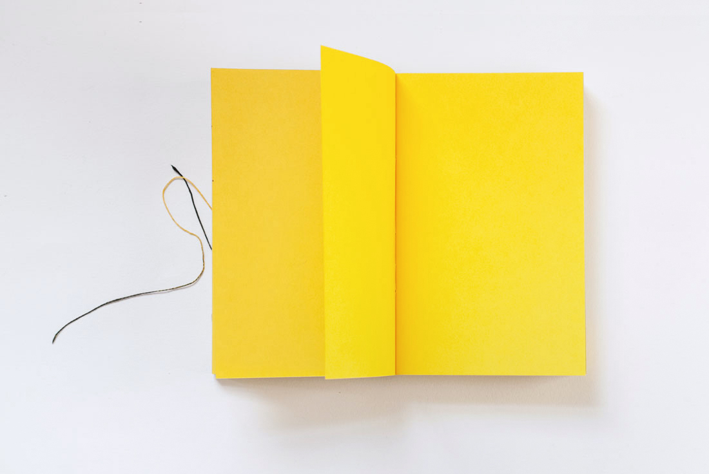
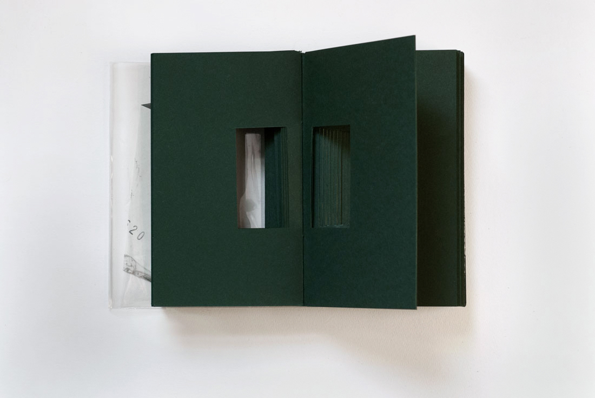
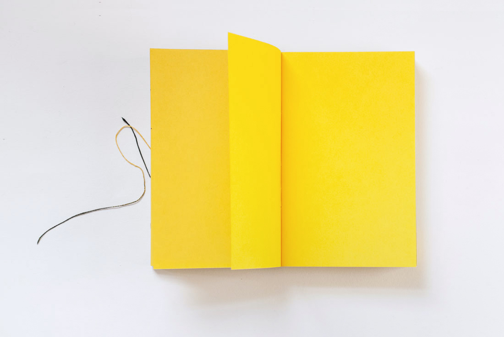
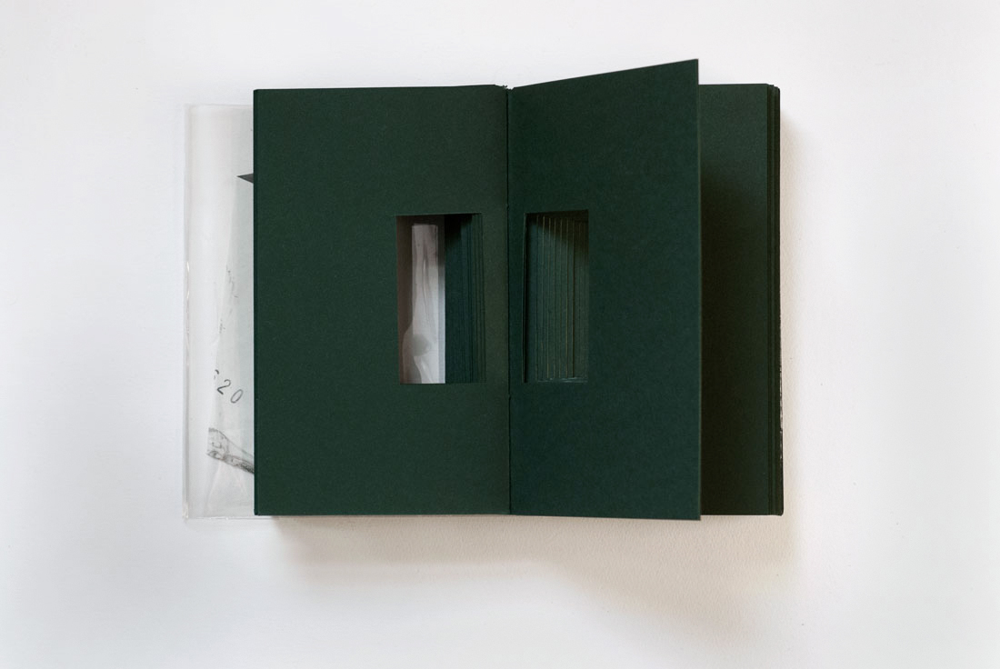
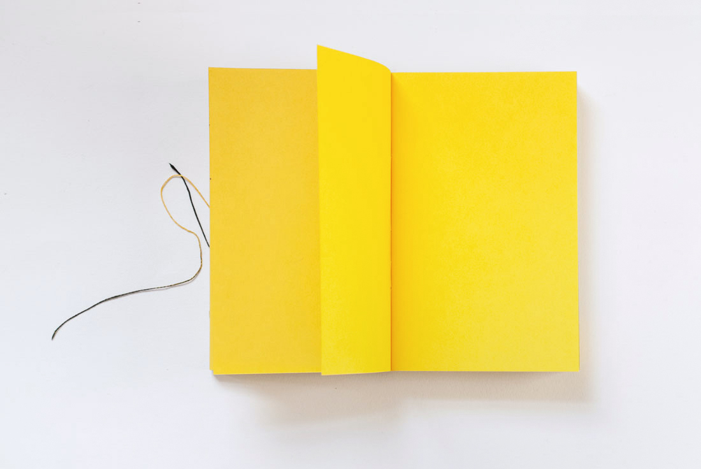
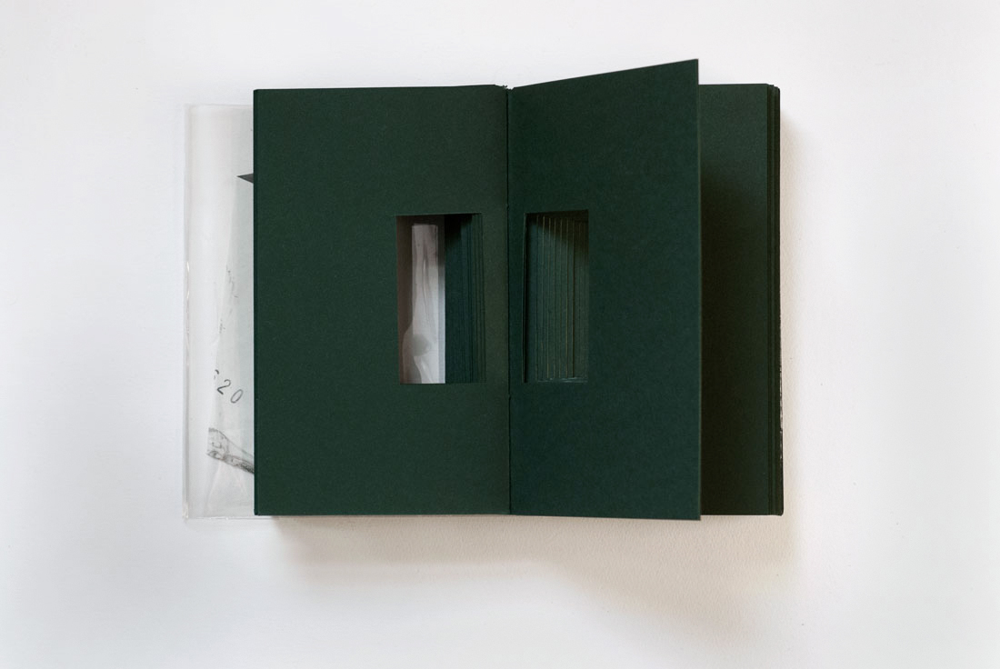
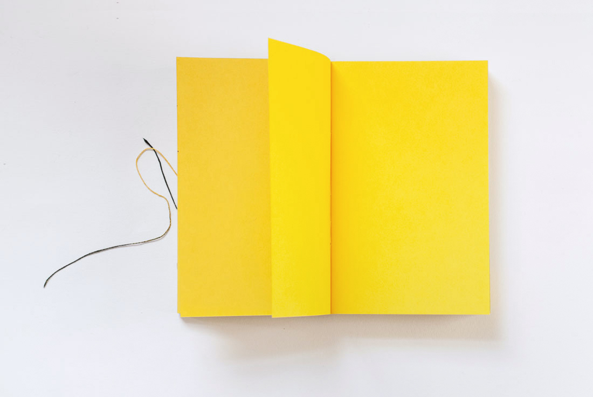
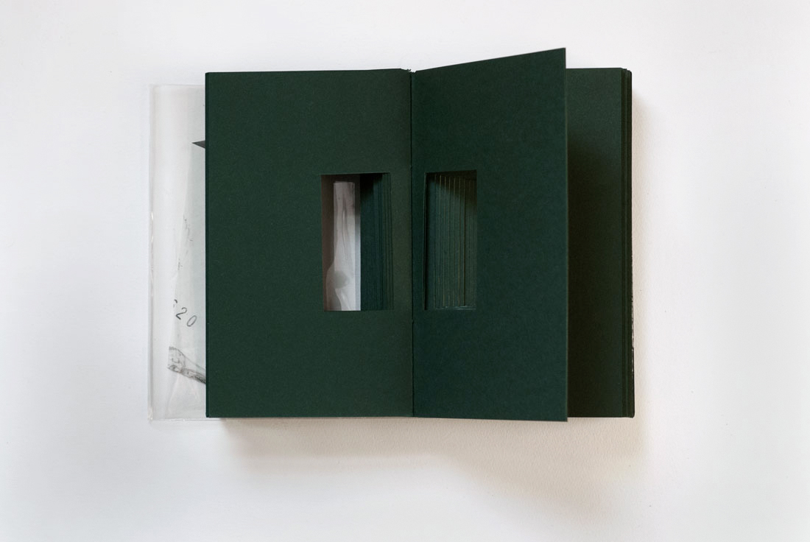
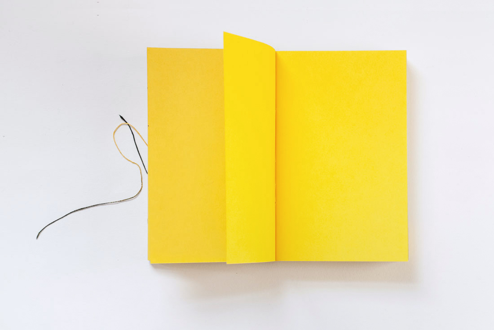
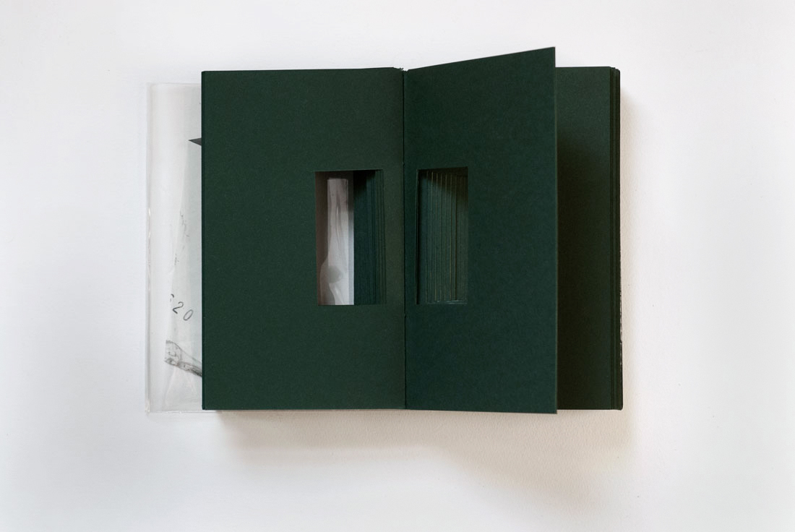

Chloe Scheffe
Design
,
illustration
, etc.
Big Questions
Five books, wrapper (with Letraset)
5 x 8 x 5"
2014
A series of five books addressing happiness, meaning, memory, love, and death.
Shown at
Final
draft
, RISD Graphic Design Senior Show, Woods-Gerry Gallery, 2015
 

 






